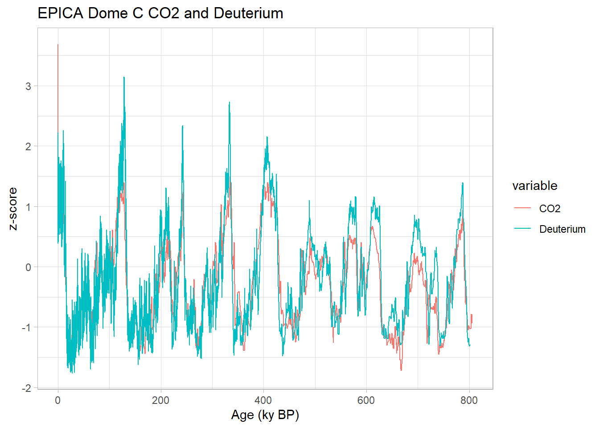
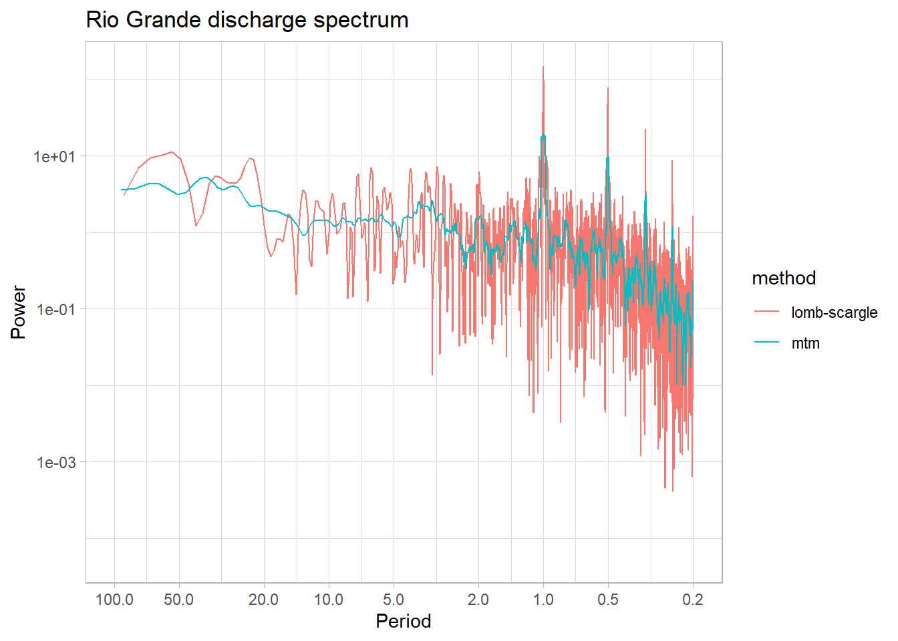
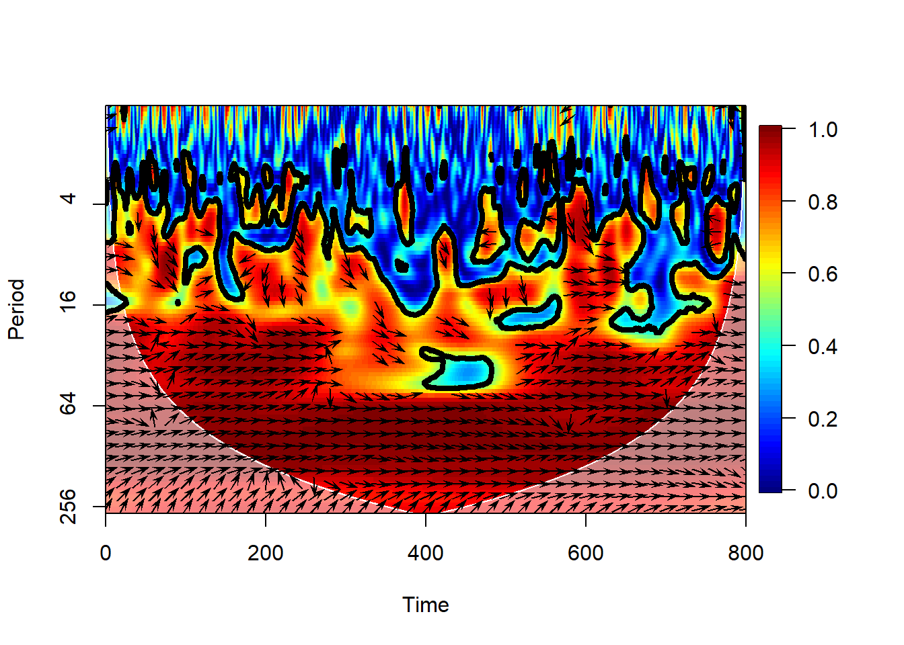

5.4 Gap-tolerant spectral analysis
5.4.1 Lomb-Scargle
We return to the original series and apply a technique to obtain the spectrum, keeping gaps in the series, known as the Lomb-Scargle periodogram:
#Let's average (or bin) the data into monthly intervals
dfBinned <- df |>
mutate(year = year(datetime),
month = month(datetime)) |>
group_by(year,month) |>
summarize(discharge = mean(`discharge (cf/s)`,na.rm = TRUE)) |>
mutate(yearDecimal = year + month/12 - 1/24) |>
dplyr::filter(is.finite(discharge))## `summarise()` has grouped output by 'year'. You can override using the `.groups`
## argument.# Compute Lomb-Scargle periodogram
lomb <- lomb::lsp(x = dfBinned$discharge,
times = dfBinned$yearDecimal,
ofac = 4,
scaleType = "period",normalize = "press",
plot = FALSE)
ltp <- data.frame(Period = 1/lomb$scanned, Power = lomb$power)
# Plot
ggplot(ltp, aes(x=Period, y=Power)) +
labs(title = "Rio Grande discharge Lomb-Scargle spectrum") +
geom_line() +
#geom_line(aes(y = AR1_95_power),color = "red") +
scale_y_log10() +
scale_x_continuous(trans = reverselog_trans(10),
breaks = c(100,50,20,10,5,2,1,0.5,0.2),
limits = c(100,0.2)) +
theme_light()
We can see that this resembles our interpolated MTM approach - but has some differences. Let’s plot on the same graph to take a closer look:
comboPlotData <- bind_rows(mutate(mtm1,method = "mtm"),
mutate(ltp,method = "lomb-scargle"))
ggplot(comboPlotData, aes(x=Period, y=Power,color = method)) +
labs(title = "Rio Grande discharge spectrum") +
geom_line() +
scale_y_log10() +
scale_x_continuous(trans = reverselog_trans(10),
breaks = c(100,50,20,10,5,2,1,0.5,0.2),
limits = c(100,0.2)) +
theme_light() It is often useful to be able to compare methods and/or parameter choices, to see if the results are robust. We see that some choices lump peaks into broad bands, others tend to slice them up.
5.4.2 Wavelet
Wavelet analysis using the Morlet wavelet:
# Convert to matrix format required by biwavelet
dat <- cbind(time_vec, dis_vec)
dat <- dat[1:1880,]
# Compute wavelet transform
wav <- biwavelet::wt(dat)
# Plot wavelet power spectrum
biwavelet::plot.biwavelet(wav, plot.phase = FALSE, type = "power.norm")
We’ll explore wavelets more in the next chapter.